Maguro 도움말
버전 0.2.6 · Windows · 이 사이트는 라이트 테마로만 표시됩니다
개요
Maguro는 Windows용 다중 패널 파일 관리자입니다. 패널마다 실제 탐색기 보기가 들어 있어서 우클릭 메뉴, 끌어서 놓기, 썸네일, Windows 복사 대화 상자를 탐색기와 똑같이 쓸 수 있습니다.
처음 설치하면 패널 하나로 시작합니다. 다른 프로그램 없이 파일을 복사하거나 옮기거나 비교하고 싶을 때 패널을 늘리면 됩니다. 4×4 격자로 최대 16개까지 둘 수 있습니다.
Maguro는 efww가 만든 efww/grids의 포크입니다. 실행 파일 이름(maguro.exe), 창 클래스, 설정 폴더, 단축키(Win+Shift+E)는 Maguro만의 것을 씁니다.
시작 메뉴나 명령줄에서 실행합니다. maguro.exe C:\Work D:\Archive처럼 폴더 경로를 넘기면 그 폴더들이 열리고, .maguro 파일을 넘기면 저장해 둔 세션이 열립니다. .grids, .qdr, grids.ini는 세션 파일이 아니므로 가져오지 않습니다.
F1을 누르면 브라우저에서 이 도움말이 열립니다. Ctrl+/는 앱 안의 간단한 단축키 목록을, Ctrl+,는 설정을 엽니다.
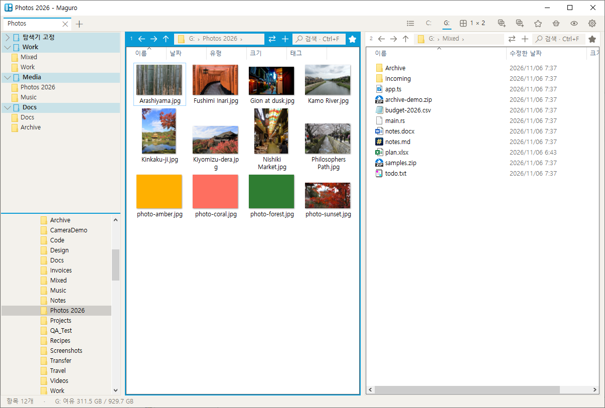
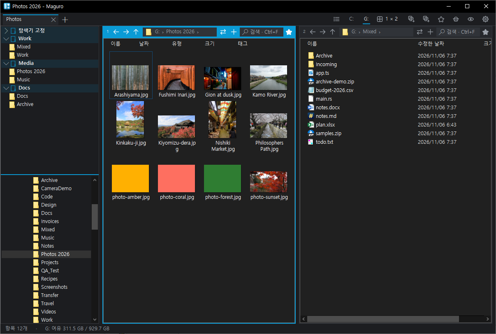
주소창과 도구 모음
단축키는 단축키 항목에 모아 두었습니다.
주소창에는 현재 폴더가 표시됩니다. 경로의 각 부분을 누르면 그 폴더로 이동하고, 꺾쇠(›)를 누르면 그 안의 폴더 목록이 나옵니다. 경로를 직접 입력하려면 현재 폴더 이름이나 주소창의 빈 곳을 누르거나 주소창 단축키(Ctrl+L, Alt+D, F4)를 누릅니다.
탭 줄 도구 모음에는 레이아웃, 저장, 세션 열기, 즐겨찾기, 파일 바구니, 폴더 감시가 이 순서로 있습니다. 파일 바구니와 폴더 감시는 즐겨찾기 별과 톱니바퀴 사이에 있습니다. 드라이브 문자는 탭 줄에 둘 수 있으며, 창이 좁아지면 뒤쪽 문자부터 숨겨집니다. 도구 모음, 드라이브 버튼, 상태 표시줄은 설정 → 모양에서 숨길 수 있습니다. 도구 모음을 숨기면 레이아웃, 저장, 세션 열기, 즐겨찾기, 파일 바구니, 폴더 감시, 드라이브 문자도 함께 숨겨집니다. 톱니바퀴와 탭 목록 단추는 남습니다.
톱니바퀴 이름은 설정 및 보기입니다. 그 메뉴를 열고, 도구 모음을 숨겨도 톱니바퀴는 남습니다. 메뉴는 구분선으로 나뉘어 있습니다. 맨 위에는 이 탭 저장, 세션 열기, 작업 공간이 있고, 다음에는 파일 바구니, 최근 파일, 탐색기 창의 폴더 가져오기, 폴더 감시가 있습니다. 해당할 때는 WinMerge 명령도 여기에 나옵니다. 그 아래로 보기(숨김 파일 표시, 파일 확장명 표시, 왼쪽 패널, 즐겨찾기 패널 표시, 트리뷰 패널 표시, 미리보기 창), 모양(라이트 테마 또는 다크 테마, Windows 라이트·다크 설정 따르기, 선택 색, 언어), 동작(빈 곳 더블클릭: 위 폴더로, 어디서나 Maguro 불러오기)이 이어지고, 마지막에 설정, 단축키, 도움말, Maguro 정보가 있습니다. 폴더에서 표시는 이 메뉴에 없습니다. 최근 파일에서 우클릭 메뉴로 쓰거나 Ctrl+Enter를 누르세요.
상태 표시줄에는 선택한 항목 수와 드라이브의 남은 공간이 표시됩니다.
⇄ 버튼은 선택한 폴더(선택이 없으면 현재 폴더)를 다른 패널에서 엽니다. 이때 이 패널의 열, 정렬, 보기 설정도 그대로 가져갑니다. 파일을 선택한 상태라면 그 파일을 다른 패널로 복사하거나 이동하며, 한 번에 최대 10,000개까지 가능합니다. 패널이 하나뿐이면 좌우로 나눕니다. 아무것도 선택하지 않았거나 폴더 없이 파일만 선택했다면 현재 폴더를 복제하고, 선택한 파일은 복사하지 않습니다.
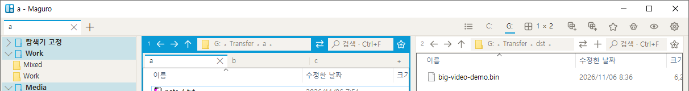
레이아웃과 패널
단축키는 단축키 항목에 모아 두었습니다.
패널 하나에는 폴더 하나가 열립니다. 레이아웃 버튼을 누르면 균등한 격자로 나뉩니다. 레이아웃 선택 창에서 누른 채 끌면 열마다 행 수를 정할 수 있고, 방향키와 Enter로도 고를 수 있습니다.
구분선을 끌면 크기가 바뀌고, 두 번 클릭하면 균등하게 나뉩니다. 열은 최대 4개, 한 열의 행은 최대 4개, 패널은 모두 16개까지입니다. 놓을 위치의 미리보기가 빨간색이면 그 배치가 한도를 넘는다는 뜻입니다.
Ctrl+Shift+M을 누르거나 패널 머리줄을 두 번 클릭하면 그 패널이 크게 표시되고, 한 번 더 하면 원래대로 돌아옵니다.
설정 → 일반 → 기본 레이아웃은 새 탭, 새 창, 첫 실행에 쓰는 배치입니다. 처음 설치하면 패널 하나입니다. 레이아웃을 한 번도 저장하지 않은 예전 maguro.json이라면 지금도 좌우 패널 두 개로 열립니다. 다른 실행에서 넘겨받은 경로도 지금처럼 패널 하나짜리 탭으로 열립니다. 저장한 .maguro 파일은 그 파일에 저장된 배치로 열립니다.
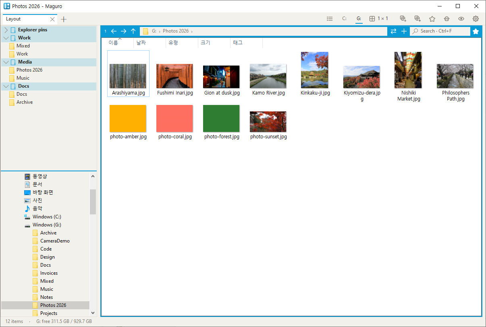
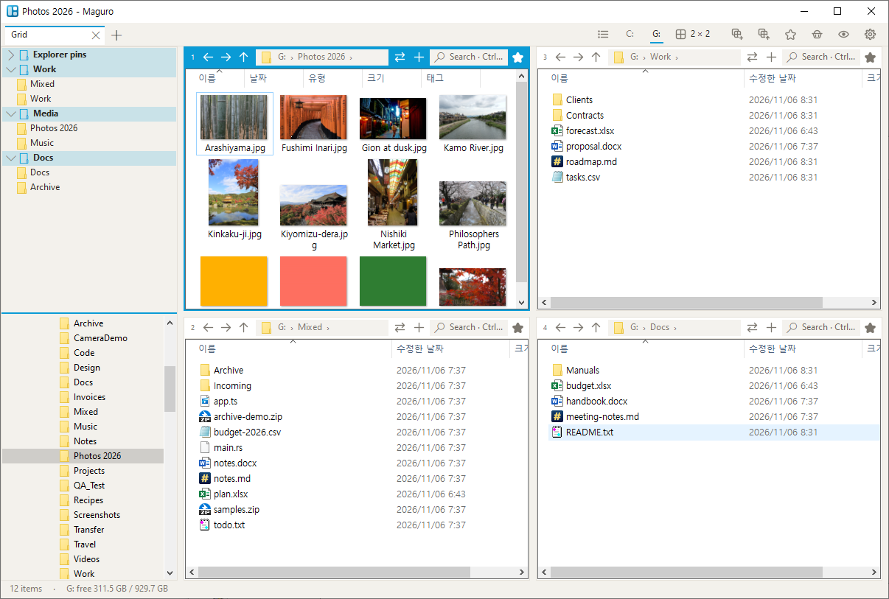
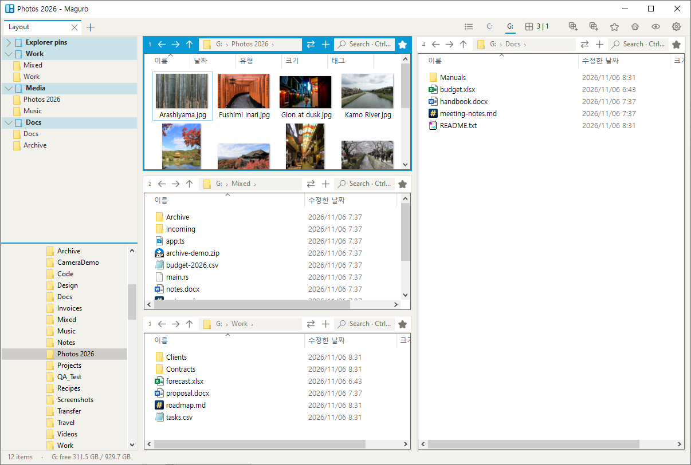
패널 이동과 복제
번호 배지나 머리줄을 끌어서 패널을 옮깁니다.
다른 패널의 가장자리에 놓으면 그 패널이 나뉘고, 가운데에 놓으면 두 패널의 자리가 바뀝니다. Ctrl을 누른 채 끌면 현재 패널 탭을 복사합니다. 이때 가장자리에 놓으면 원래 패널은 그대로 두고 나뉘며, 가운데에 놓으면 그 칸에 패널 탭으로 추가됩니다. 끄는 도중 Ctrl을 떼면 복사 대신 이동합니다.
키보드로도 할 수 있습니다. Alt+Shift+방향키는 옆 패널로 포커스를 옮기고, Ctrl+Alt+Shift+방향키는 옆 패널과 자리를 바꿉니다.
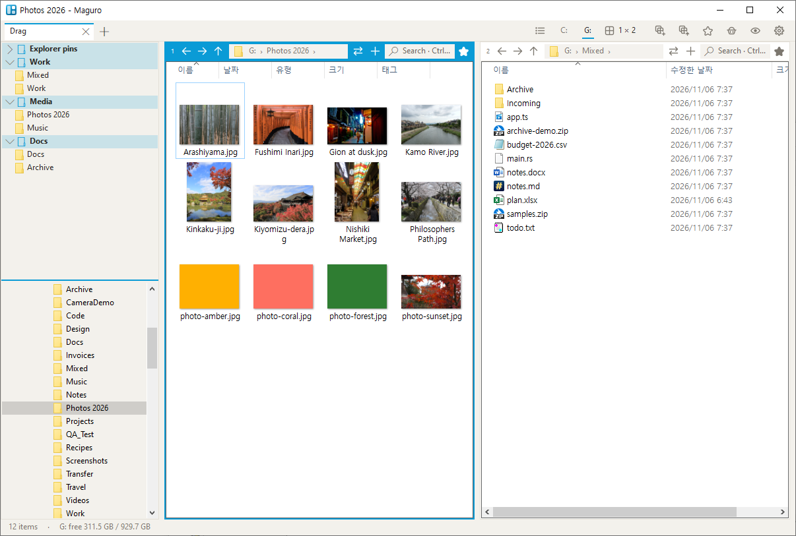
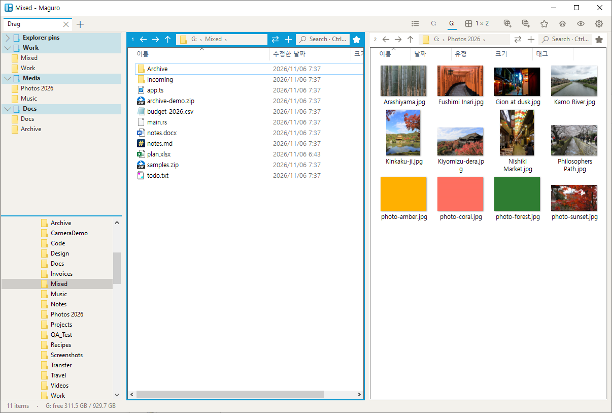
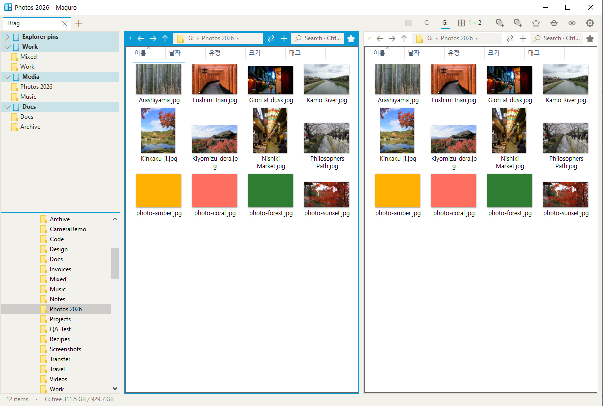
창 탭과 세션
단축키는 단축키 항목에 모아 두었습니다.
창 탭 하나에는 레이아웃 전체가 담깁니다. 패널, 폴더, 보기, 열, 필터, 잠금, 색 라벨이 모두 포함됩니다. 탭 이름은 직접 바꾸기 전까지 활성 폴더 이름을 따라갑니다. 탭을 우클릭하면 이름 바꾸기, 잠금, 복제, 새 창으로 이동, 저장, 색 지정, 탭 목록 열기를 할 수 있습니다. 잠근 탭은 다른 탭 모두 닫기나 모든 탭 닫기를 해도 닫히지 않습니다.
Ctrl+T는 새 탭을 열고 Ctrl+W는 현재 탭을 닫습니다. Ctrl+Shift+T는 닫은 탭을 다시 열고, Ctrl+Alt+K는 탭을 복제합니다. 탭 사이를 오갈 때는 Ctrl+Tab과 Ctrl+Shift+Tab을 씁니다.
저장(Ctrl+S)을 누르면 이 탭을 저장합니다. 한 번도 저장하지 않은 탭이면 이름을 묻습니다. 저장 버튼에 초록 점이 있으면 이 탭의 레이아웃에 저장하지 않은 변경이 있다는 뜻입니다. 평범한 파일 복사로는 초록 점이 켜지지 않습니다. 설정 → 세션에서 초록 점을 끄거나, 종료할 때 세션을 자동으로 저장하게 할 수 있습니다. 종료할 때 자동 저장이 제대로 되려면 창의 닫기 버튼으로 닫으세요.
세션 열기는 저장한 탭을 현재 탭 옆에 엽니다. 세션 파일을 여러 개 열면 파일마다 탭이 하나씩 열립니다.
이름 있는 세션은 .maguro 파일로만 저장되며, 설정 파일 옆의 maguro-sessions 폴더에 있습니다(%APPDATA%\Maguro\maguro-sessions, 포터블 모드에서는 exe 옆). 세션 파일에는 레이아웃, 패널 경로, 보기, 열, 색조, 패널 탭, 창 탭이 들어갑니다. 즐겨찾기, 파일 바구니, 우클릭 메뉴 설정은 세션에 들어가지 않고 maguro.json에 남습니다.
Maguro는 .grids, .qdr, grids.ini를 가져오지 않습니다. 명령줄로 old.qdr을 넘겨도 세션이 열리지 않습니다. 설정 → 고급에서는 Maguro의 maguro.json이나 Maguro가 예전에 쓰던 ini 텍스트를 가져올 수 있습니다. 이 ini는 grids 파일이 아니라 Maguro 자체의 파일입니다.
창 하나만 쓰기가 꺼져 있으면 Ctrl+N으로 창을 하나 더 엽니다. 처음 설치하면 이 설정은 켜져 있습니다. 켜져 있을 때는 Maguro를 다시 실행하거나, Ctrl+N을 누르거나, 탭을 탭 줄 밖으로 끌거나, 새 창으로 이동을 고르면 새 창 대신 지금 창에 탭이 열립니다. 중복 실행 막기도 기본으로 켜져 있어서, 다시 실행해도 지금 프로세스 안에서 처리됩니다.
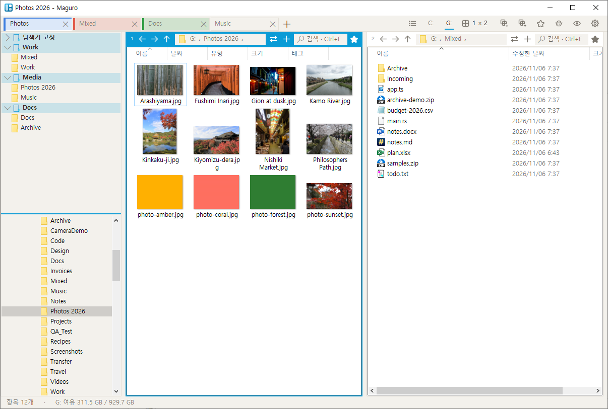
탭 목록
Ctrl+Shift+L을 누르면 이 창의 탭 목록이 열리고, 이미 열려 있으면 닫힙니다. 탭 줄 오른쪽 끝의 목록 버튼도 같은 일을 합니다. 탭 우클릭 메뉴의 탭 목록…은 목록을 열고, 이미 열려 있으면 목록으로 포커스를 옮깁니다. 목록은 Esc나 닫기로 닫습니다.
한 줄이 창 탭 하나입니다. 열에는 탭 이름, 배치(예: 2×2, 열마다 행 수가 다르면 2 | 3), 패널 수, 폴더 칩이 표시됩니다. 현재 탭에는 세룰리언 막대가 붙고, 잠근 탭에는 잠금 표시가 나옵니다. 각 탭은 처음에는 요약 한 줄입니다. 활성 패널의 현재 폴더와, 나머지 폴더를 가리키는 +N만 보입니다. Right는 그 줄을 펼치고 Left는 접습니다. 현재 탭은 처음부터 펼쳐집니다. 필터는 맞는 탭만 펼칩니다.
필터는 대소문자를 가리지 않고 탭 이름, 폴더 표시 이름, 전체 경로에서 찾습니다. 입력란의 안내 문구는 “탭 이름·폴더로 필터”입니다. 폴더 칩에 마우스를 올리면 칩 아래 도구 설명에 전체 경로가 나옵니다. 내 PC는 셸 식별자 대신 현지화된 이름으로 표시됩니다.
F2를 누르면 선택한 탭의 이름을 그 자리에서 바꿀 수 있습니다. Enter로 확정하고 Esc로 취소합니다. 글자를 고치지 않고 확정하면 자동으로 붙은 폴더 이름이 고정되지 않습니다. 이름을 비우거나 숫자만 입력하면 직접 붙인 이름이 지워지고, 탭 이름이 다시 폴더를 따라갑니다. 직접 붙인 이름은 80자까지 저장됩니다.
Enter, 이동 버튼, 두 번 클릭 중 하나로 그 탭으로 전환하면 목록이 닫힙니다. 필터 칸에 포커스가 있고 내용이 있으면 Del은 필터를 지웁니다. 그 밖의 경우에는 선택한 탭을 닫을 수 있을 때 Del로 그 탭을 닫습니다.
아래쪽에는 탭 수와 함께 Enter 이동, Right 펼치기, Left 접기, F2 이름 바꾸기, Del 탭 닫기, Esc 창 닫기 안내가 표시됩니다.
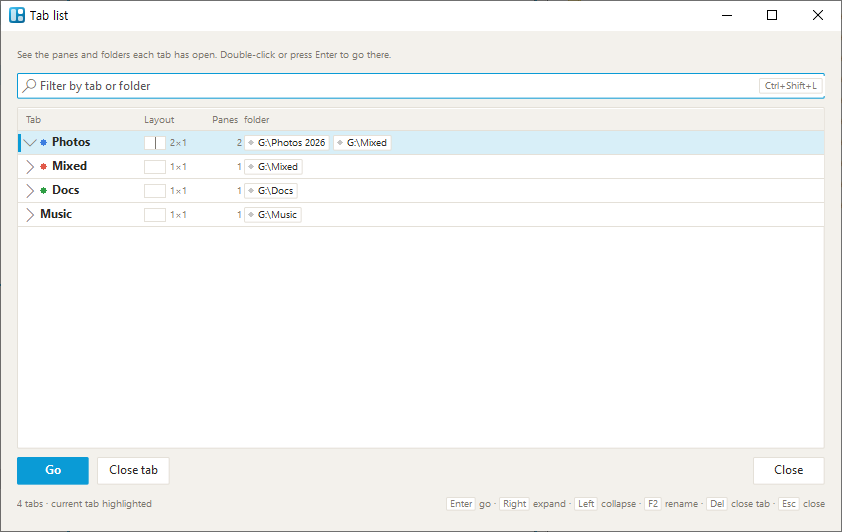
패널 탭
단축키는 단축키 항목에 모아 두었습니다.
패널 탭은 한 패널 안에 폴더를 더 여는 기능으로, 창 탭과는 다릅니다. 폴더가 하나뿐이면 패널 탭 줄은 숨겨져 있습니다. ⇄ 옆의 버튼으로 패널 탭을 추가합니다.
패널 탭은 가운데 클릭이나 작은 닫기 표시로 닫습니다. Ctrl+Alt+T는 패널 탭을 만들고, Ctrl+Alt+W는 닫고, Ctrl+Alt+Page Down과 Ctrl+Alt+Page Up은 패널 탭 사이를 이동합니다. 이 네 단축키는 포커스가 패널에 있을 때만 동작하므로 창 탭 단축키와 겹치지 않습니다.
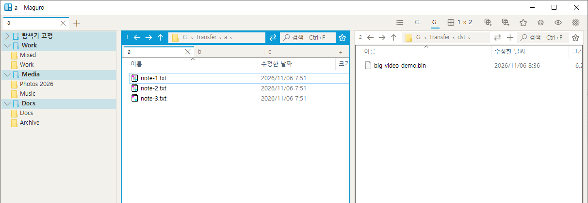
패널 색
패널 머리줄을 우클릭하면 색 라벨을 지정할 수 있습니다. 라벨은 세션에 함께 저장되며, 창 탭의 색과는 따로 관리됩니다.
색은 하늘, 그레이, 라벤더, 세이지, 피치, 로즈 여섯 가지이고, 라이트 테마와 다크 테마에서 각각 다른 색조로 표시됩니다. 이 색은 패널 라벨일 뿐 창의 강조 색이 아닙니다. 강조 색은 설정 → 모양에서 정하며, 기본값은 세룰리언 #0A9BD6입니다.
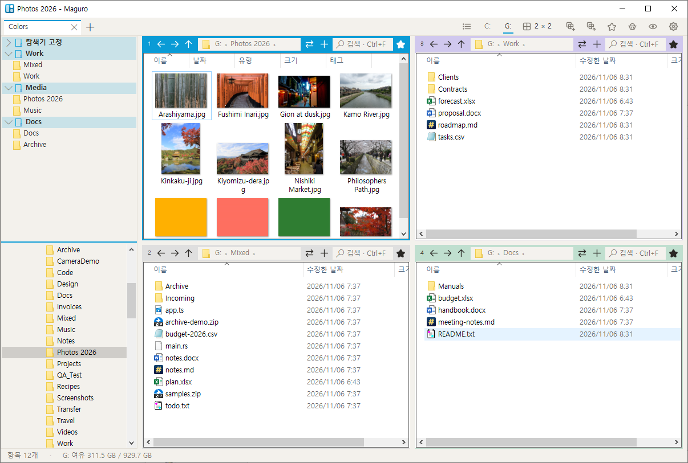
즐겨찾기와 폴더 트리
단축키는 단축키 항목에 모아 두었습니다.
왼쪽 패널에는 즐겨찾기와 폴더 트리가 함께 들어 있으며, 둘 사이의 구분선을 끌어 크기를 나눕니다. 어느 쪽을 위에 둘지는 설정 → 패널·보기에서 고르며, 기본값은 즐겨찾기가 위입니다. Ctrl+Shift+E로 왼쪽 패널 전체를 보이거나 숨깁니다. 즐겨찾기 패널 표시와 트리뷰 패널 표시(보기 메뉴 또는 설정 → 패널·보기)로 각각을 켜고 끕니다. 하나만 켜면 그 쪽이 패널 높이를 다 쓰고, 둘 다 끄면 왼쪽 패널이 숨겨집니다.
즐겨찾기에는 폴더와 파일을 담을 수 있고, 그룹 안에 그룹을 만들 수도 있습니다. 탐색기의 빠른 액세스 고정 항목과 탐색기 즐겨찾기 파일도 이 패널에 나올 수 있습니다. 즐겨찾기를 누르면 활성 패널에서 열리고, 그룹을 누르면 펼치거나 접힙니다. 검색할 때는 상위 그룹이 함께 표시되므로 찾은 항목이 어디에 있는지 알 수 있습니다. 파일이나 폴더를 패널에 끌어다 놓으면 고정되고, 끌어서 순서를 바꿀 수 있습니다.
없어진 폴더를 누르면 빈 경로를 여는 대신, 즐겨찾기에서 제거할지 위치를 바꿀지 묻습니다.
Ctrl+B는 빠른 즐겨찾기 목록을 엽니다. 여기서 검색, 이름 바꾸기, 삭제, 활성 패널에서 열기를 할 수 있습니다. 패널의 별 버튼은 그 패널의 폴더를 즐겨찾기에 추가하거나 제거합니다.
우클릭 메뉴에는 Maguro 즐겨찾기에 추가 또는 Maguro 즐겨찾기에서 제거 항목이 따로 있습니다. 이 항목은 탐색기의 즐겨찾기 명령이 아니라 Maguro가 넣은 것이며, 우클릭 메뉴 항목 설정 페이지에서도 숨길 수 없습니다.
폴더 트리에서 Enter를 누르거나 두 번 클릭하면 그 폴더가 패널에 열립니다. Ctrl+클릭이나 가운데 클릭은 패널 탭으로 엽니다.

검색
Ctrl+F를 누르고 입력하면 입력하는 대로 이 폴더의 항목이 걸러집니다.
하위 폴더를 켜면 하위 폴더까지 검색합니다. 검색에 Everything 사용이 켜져 있고(기본값) voidtools Everything이 실행 중이면 Everything으로 검색하고, 그렇지 않으면 디스크를 직접 훑습니다. 결과는 최대 300개까지 표시되며, 정렬 방식은 maguro.json에 저장됩니다.
설정 → 일반에서 Everything이 설치되어 실행 중인지 확인할 수 있고, Everything을 시작하거나 winget으로 설치할 수도 있습니다. Everything이 설치되지 않은 상태에서 하위 폴더 검색을 처음 하면 설치할지 한 번 묻습니다.
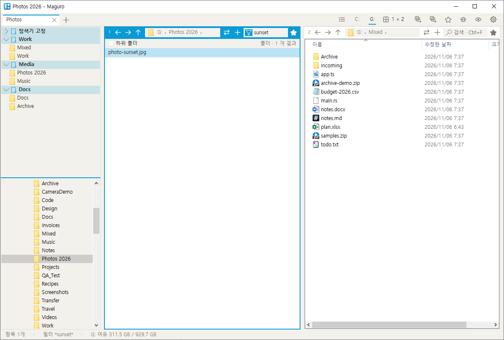
미리보기와 빠른 미리보기
단축키는 단축키 항목에 모아 두었습니다.
F3을 누르면 빠른 미리보기가 열립니다. 스페이스로 미리보기가 켜져 있으면(기본값) 스페이스로도 열립니다. 다만 이름을 입력하고 1초 안에 누른 스페이스와, 한글·일본어 IME로 글자를 조합하는 중에 누른 스페이스는 이름의 일부로 입력됩니다. Ctrl+Space와 Shift+Space는 가로채지 않습니다.
빠른 미리보기로 볼 수 있는 것은 그림(일반적인 카메라 RAW 포함), 동영상 썸네일, 오디오 정보 카드, PDF 페이지, Markdown, 일반 텍스트, 코드, CSV·TSV 표, ZIP 내용 목록, HWP, HWPX, HWPT입니다. Office, HTML, Outlook 메일, 글꼴, PDF는 파일이 10 MB 이하이면 탐색기와 같은 방식으로 Windows 미리보기 처리기를 쓸 수도 있습니다. 이보다 큰 파일은 기다리지 않고 바로 정보 카드를 보여 줍니다. 그릴 수 없는 파일도 아이콘만 띄우지 않고, 기본 정보를 담은 짧은 카드로 보여 줍니다.
빠른 미리보기에서 Enter를 누르면 파일을 기본 앱으로 열고 미리보기를 닫습니다. Shift+Enter나 우클릭은 다른 앱으로 열기입니다. Esc, 스페이스, F3은 미리보기 창을 닫습니다. F2는 보고 있는 파일의 이름을 바꾸고, Del은 그 파일을 삭제합니다. Ctrl+휠로 10%에서 800%까지 확대·축소하고, 끌어서 화면을 옮깁니다. 긴 페이지는 휠로 스크롤합니다. 왼쪽·오른쪽 방향키는 언제나 이전·다음 파일로 넘어갑니다. 위·아래 방향키는 스크롤하다가, 페이지 끝에서 다시 누르면 다른 파일로 넘어갑니다. 휠로 다음 파일로 넘어가는 것은 설정 → 패널·보기 → 휠로 다음/이전 파일로 넘기기가 켜져 있을 때뿐이며, 이 옵션은 기본으로 꺼져 있습니다.
Alt+P는 오른쪽 미리보기 창을 보이거나 숨깁니다. 미리보기 창은 활성 패널에서 포커스가 있는 파일을 보여 줍니다. Windows 미리보기 처리기가 있으면 그것으로 그리고, 없으면 썸네일이나 짧은 안내를 표시합니다. 이름 있는 .maguro 파일을 열어도 미리보기 창의 표시 여부는 바뀌지 않습니다. 구분선을 두 번 클릭하면 기본 너비로 돌아갑니다.

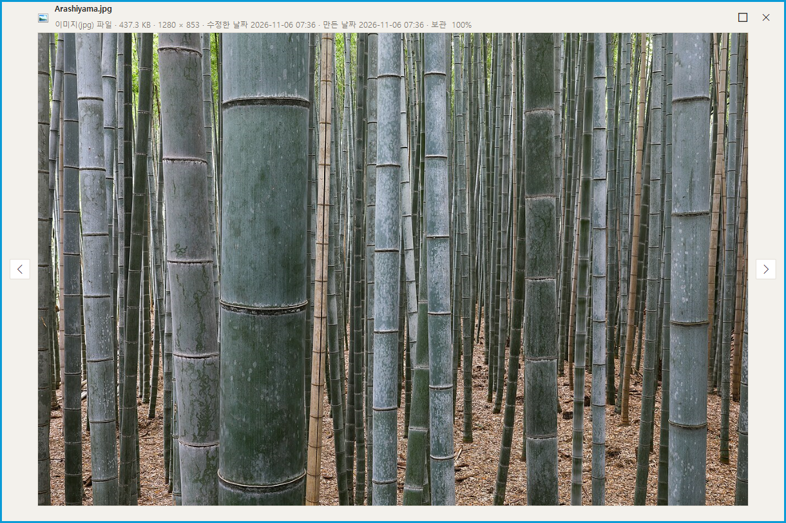
파일 작업
단축키는 단축키 항목에 모아 두었습니다.
복사, 잘라내기, 붙여넣기, 이름 바꾸기(F2), 삭제는 탐색기와 똑같이 동작합니다. F5는 포커스가 어디에 있든 활성 패널을 새로 읽고, 열지 못한 네트워크 폴더를 다시 시도합니다. Ctrl+Shift+C는 전체 경로를 복사합니다.
붙여넣기와 끌어서 놓기는 Windows 복사 엔진인 IFileOperation을 사용합니다. 그래서 Windows 진행 창, 실행 취소, 익숙한 확인 메시지가 그대로 나옵니다. 일반적인 로컬 복사에서는 Maguro가 이 대화 상자를 대신하지 않습니다.
Del은 Windows 기본 동작을 따르며, 보통은 휴지통으로 보냅니다. Shift+Del은 완전히 삭제합니다. 설정 → 파일 작업에서 Del을 누를 때 확인할지, 기본 삭제를 휴지통으로 할지 완전 삭제로 할지 정할 수 있습니다. 확인은 기본으로 켜져 있습니다.
패널 사이로 끌어다 놓으면 복사하거나 이동합니다. 기본값은 Windows 규칙(같은 드라이브=이동)이며, 설정에서 항상 복사나 항상 묻기로 바꿀 수 있습니다. 항상 묻기를 고르면 복사, 이동, 취소 중에서 선택합니다. 폴더 줄 위에 놓으면 파일이 그 폴더 안으로 들어갑니다.
고속 복사(설정 → 파일 작업)는 기본으로 꺼져 있습니다. 켜 두면 UNC 경로나 rclone 마운트를 포함해 네트워크 경로가 관련된 붙여넣기와 끌어서 놓기에 robocopy와 Maguro 자체 진행 창을 쓰며, 도중에 취소할 수 있습니다. 우클릭 메뉴의 고속 붙여넣기는 이 설정과 관계없이 로컬 복사라도 항상 이 방식을 씁니다. 로컬에서 로컬로 붙여넣을 때는 고속 붙여넣기를 고르지 않는 한 IFileOperation을 그대로 씁니다. 이때 robocopy는 대상 폴더를 미러링하거나 비우지 않습니다. 이동은 먼저 복사한 뒤, 모든 단계가 성공했을 때만 원본을 삭제합니다.
클립보드에 그림이 있을 때 Ctrl+V를 누르면 현재 폴더에 PNG 파일로 저장합니다.
Ctrl+Shift+N은 활성 패널에 새 폴더를 만들고 이름 바꾸기를 시작합니다. F7은 그 패널에서 탐색기 자체의 새 폴더 명령을 실행합니다. Ctrl+Alt+N은 새 텍스트 문서를 만듭니다. 새 파일 이름은 설정에서 정합니다.
Ctrl+Shift+O는 탐색기 창에 열린 폴더를 Maguro 패널로 가져옵니다. 그중 한 폴더를 이미 보여 주는 패널은 그대로 두고, 나머지 폴더는 활성 패널부터 차례로 엽니다.
Ctrl+Alt+C는 활성 패널의 폴더와 다음 패널의 폴더를 WinMerge로 비교합니다. 톱니바퀴 메뉴와 파일 목록에서는 선택한 파일 두 개를 비교하거나, 파일 하나를 다른 패널의 같은 이름 파일과 비교할 수 있습니다. WinMerge 경로는 설정 → 일반에서 지정하며, 비워 두면 자동으로 찾습니다. 우클릭 메뉴의 WinMerge 항목은 설정 → 우클릭 메뉴 항목에서 켜기 전까지 꺼져 있습니다.
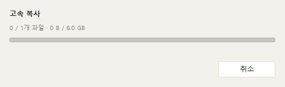
일괄 이름 바꾸기
Ctrl+Shift+R을 누르거나 우클릭 메뉴에서 일괄 이름 바꾸기를 고르면, 선택한 항목의 이름을 한꺼번에 바꾸는 창이 열립니다. 최근 파일 패널에서는 열리지 않습니다. 창은 설정과 같은 모양으로, 평평한 제목 표시줄과 카드, 같은 확인란을 씁니다. 왼쪽에 규칙, 오른쪽에 실시간 미리보기가 있습니다. 규칙 추가는 오른쪽 위, 되돌리기는 왼쪽 아래, 닫기와 이름 바꾸기는 오른쪽 아래에 있습니다.
도구 모음에서 대상을 파일, 폴더, 또는 둘 다로 거르고, 확장자 목록으로도 거를 수 있습니다. 확장자 목록은 폴더에는 적용되지 않습니다. 프리셋은 설정 파일 옆 rename-presets에서 불러오고 그곳에 저장합니다(%APPDATA%\Maguro\rename-presets, portable.txt가 있으면 exe 옆). maguro.json에는 저장하지 않습니다.
규칙은 위에서 아래 순서로 적용됩니다. 규칙마다 확인란으로 켜고 끌 수 있고, 위아래로 순서를 바꿀 수 있습니다. 규칙 종류는 다음과 같습니다.
바꾸기 — 찾아 바꾸기입니다. 대소문자 구분과 확장자 포함 여부를 고를 수 있습니다. 접두사와 접미사 — 확장자가 아니라 확장자를 뺀 이름에 붙습니다. 대소문자 — 소문자, 대문자, 단어 첫 글자, 문장 중에서 고르며, 확장자도 함께 바꿀 수 있습니다. 확장자 — 확장자를 새로 지정합니다. 폴더에는 적용되지 않습니다. 번호 — 시작 값, 간격, 0 채우기, 위치(이름 앞, 이름 뒤, 지정한 글자 위치)를 정합니다. 번호는 일괄 작업 안에서 항목이 놓인 순서대로 매기며, 제외된 줄은 세지 않습니다. 날짜 — 수정한 날짜, 만든 날짜, 연 날짜 중 하나를 연·월·일·시·분·초 패턴으로 넣습니다. 접두사나 접미사로 붙이거나, 확장자를 뺀 이름을 대신할 수 있습니다. EXIF 정보는 읽지 않습니다. 삽입, 삭제, 다듬기 — 글자를 넣거나 지웁니다. 다듬기에서 지울 문자를 비워 두면 공백을 지웁니다. 정규식 — Rust 정규식을 씁니다. $1은 첫 번째 캡처 그룹입니다. 패턴이 비어 있으면 아무것도 바꾸지 않고, 잘못된 패턴은 해당 줄에 오류로 표시됩니다.
미리보기에는 현재 이름, 새 이름, 바뀌는 부분이 표시됩니다. 필터에서 걸러진 항목도 목록에 남아 제외로 표시됩니다. 적용할 수 없는 줄에는 가장 먼저 걸린 문제 하나가 표시되며, 확인 순서는 빈 이름, 사용할 수 없는 문자, 예약된 이름, 공백이나 점으로 끝남, 너무 긴 이름, 일괄 작업 안에서 겹치는 이름, 이미 있는 이름, 잘못된 패턴입니다.
이름 바꾸기를 누르면 이름이 바뀌고 문제가 없는 줄만 적용됩니다. 실제 이름 변경은 실행 취소가 가능한 IFileOperation으로 처리합니다. 뒤 단계에서 실패하면 같은 일괄 작업에서 먼저 끝난 단계는 되돌립니다. 이와 별도로 Maguro는 rename-undo.json에 최근 20번까지의 일괄 작업 기록을 남깁니다. 되돌리기 버튼이나 Ctrl+Z를 누르면 마지막 일괄 작업을 되돌리며, 그사이 없어진 파일은 건너뜁니다. 이름 바꾸기에 성공하면 규칙 목록이 빈 바꾸기 규칙 하나로 초기화될 수 있습니다.
이 창과 설정 창의 드롭다운은 스타일을 입힌 콤보 상자입니다. 자세한 내용은 테마와 스타일 컨트롤을 참고하세요.
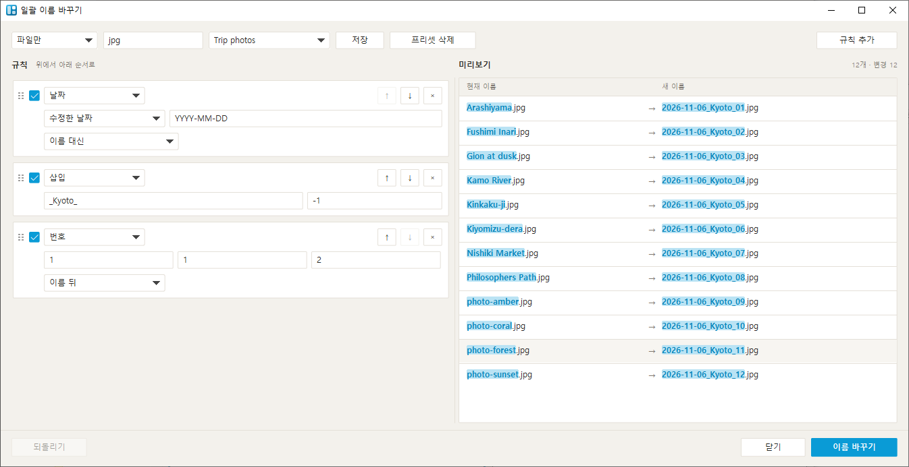
파일 바구니
Ctrl+Shift+B로 파일 바구니를 열고 닫습니다. 파일 바구니는 항상 위에 떠 있는 작은 창입니다. 파일이나 폴더를 끌어다 놓거나, Ctrl+Alt+B로 활성 패널에서 선택한 항목을 담습니다. 바구니에는 파일 사본이 아니라 경로만 저장되며, 이 경로는 .maguro 세션이 아니라 maguro.json에 저장됩니다. 목록에서 빼도 원본은 그대로 남습니다.
활성 패널에 복사와 활성 패널로 이동은 패널에서 붙여넣을 때와 같은 IFileOperation을 사용합니다. 모두 선택은 모든 줄을 선택합니다. 클릭하면 한 줄을 선택하고, Ctrl+클릭은 그 줄의 선택을 켜고 끄며, Shift+클릭은 기준 줄부터 범위를 선택합니다. 선택한 항목을 패널이나 탐색기로 끌어다 놓으면 복사됩니다. Ctrl을 누르면 복사, Shift를 누르면 이동이며, Alt나 Ctrl+Shift를 눌러도 바로 가기는 만들지 않습니다. 패널에 놓으면 작업 스레드에서 Windows 진행 창이 뜹니다. 탐색기에도 똑같이 끌어다 놓을 수 있습니다. 제거와 비우기는 목록만 바꿉니다.
원본이 없어진 항목은 직접 제거할 때까지 원본 없음으로 표시되어 목록에 남습니다. 복사와 이동은 이런 항목을 건너뜁니다.
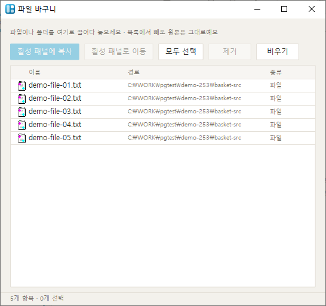
폴더 감시
Ctrl+Shift+W로 폴더 감시를 엽니다. 폴더 추가, 파일 추가, 활성 패널 추가로 감시할 대상을 넣습니다. 폴더 줄은 하위 폴더까지 포함할 수 있고, 각 줄에는 설정과 같은 확인란이 있습니다.
변경이 생기면 Maguro가 알려 줍니다. 단, Maguro가 실행 중일 때만 알립니다. 트레이 아이콘이나 백그라운드 서비스는 없습니다. 목록은 maguro.json에 저장되며, 폴더와 파일을 합쳐 최대 32개까지 감시할 수 있습니다. 감시하던 파일이 사라지면 그 줄을 삭제할 때까지 없음으로 표시되어 목록에 남습니다. 이미 감시 중인 폴더나 파일은 다시 추가되지 않습니다.
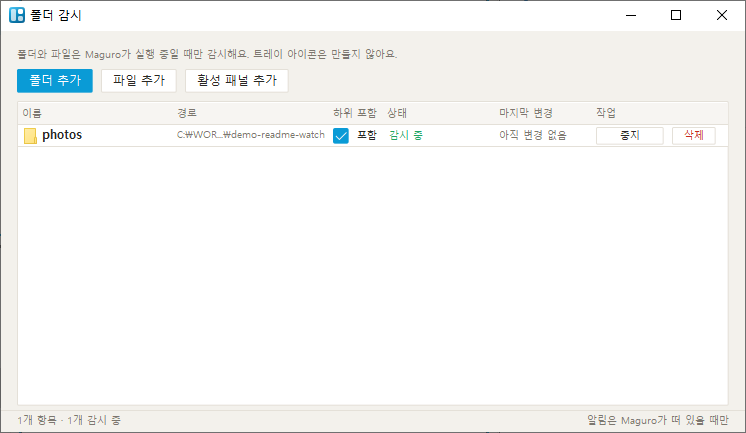
클립보드 경로
Maguro가 실행 중이면 다른 창이 앞에 있어도 Win+Alt+V로 클립보드의 경로를 열 수 있습니다. 폴더는 새 탭으로, 파일은 기본 앱으로 엽니다.
복사한 파일(CF_HDROP)이 있으면 일반 텍스트보다 먼저 씁니다. 텍스트는 앞뒤 공백과 따옴표를 없애고, file: URL도 받아들이며, 환경 변수를 확장한 뒤 첫 줄만 사용합니다. 클립보드에 폴더나 파일이 없거나 경로가 존재하지 않으면 그 사실을 알려 줍니다.
이 단축키는 기본으로 켜져 있습니다. 설정 → 일반에서 끄면 단축키 등록도 해제됩니다. 키 조합은 설정 → 단축키에서 바꿀 수 있습니다. 다른 앱의 파일 대화 상자가 앞에 있을 때는 탭을 열지 않고 그 대화 상자에 키 입력을 넘깁니다.
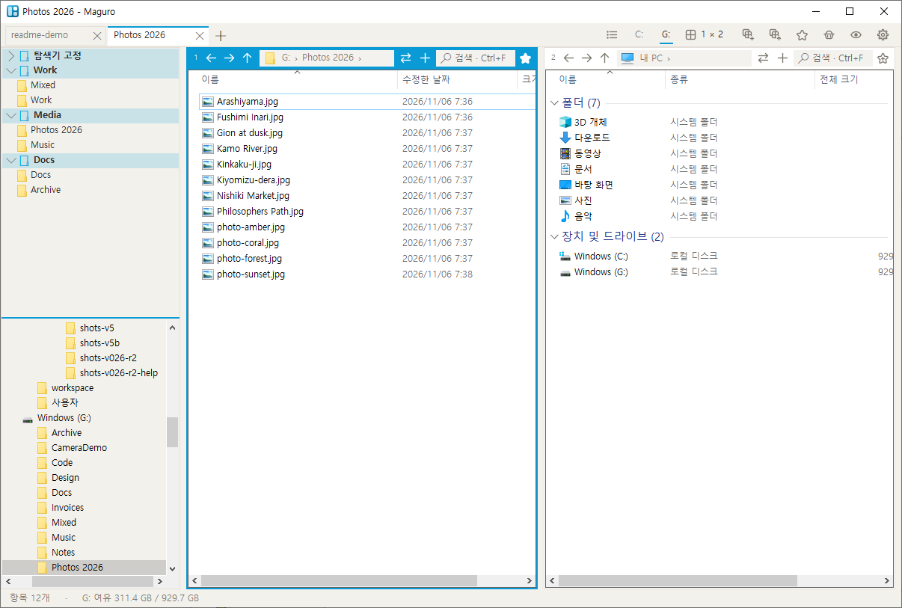
작업 공간
작업 공간에는 이름을 붙인 레이아웃을 최대 아홉 개까지 저장할 수 있습니다. 슬롯마다 이름과 .maguro 스냅샷(탭, 패널, 폴더)이 저장됩니다. 슬롯은 별도 파일이 아니라 maguro.json에 들어 있습니다. 작업 공간 단축키는 전역 단축키가 아닙니다.
Ctrl+Alt+1부터 9까지는 해당 슬롯을 불러오고, Ctrl+Alt+Shift+1부터 9까지는 현재 레이아웃을 그 슬롯에 저장합니다. 톱니바퀴 메뉴 → 작업 공간에서 슬롯을 저장하고, 불러오고, 이름을 바꾸고, 지울 수 있습니다. 빈 슬롯을 불러오면 짧은 메시지가 나옵니다. 불러오면 현재 탭이 작업 공간으로 바뀌며, 불러오기 전에 확인이 켜져 있을 때만 먼저 묻습니다.
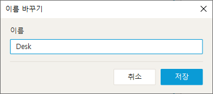
서버 연결
즐겨찾기 패널이나 그룹을 우클릭한 뒤 서버 연결 추가…를 고릅니다. 추가한 SMB, WebDAV, SFTP, FTP 서버는 폴더처럼 나타나서 열고, 복사하고, 미리 볼 수 있습니다.
서버 종류를 고르고 표시 이름, 주소, 포트, 원격 경로, 사용자, 암호를 입력합니다. 암호는 Windows 자격 증명 관리자에 저장되며, maguro.json에는 절대 기록되지 않습니다.
SMB는 Windows 공유를 사용합니다. WebDAV는 HTTPS가 필요할 수 있습니다. FTP는 입력한 호스트와 포트로 접속합니다. SFTP와 FTP는 rclone과 WinFsp로 마운트한 뒤 일반 폴더처럼 탐색할 수 있고, 미리보기, 우클릭 메뉴, 고속 복사도 쓸 수 있습니다. 이런 연결을 추가할 때 rclone과 WinFsp를 설치할지 물을 수 있습니다.
다 쓰면 연결을 끊으세요. 끊긴 공유는 네트워크 폴더 크기가 켜져 있지 않으면 폴더 크기를 계산하지 않습니다. 네트워크 폴더가 열리지 않으면 F5를 누르세요.
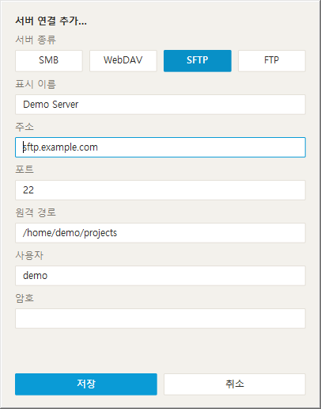
Office 파일
읽기 모드로 열기는 선택한 항목이 모두 .xls, .xlsx, .xlsm, .csv 파일일 때 나타납니다. .xlsb나 폴더가 있거나 다른 형식이 섞여 있으면 나타나지 않습니다. 이 명령은 해당 경로로 excel.exe /r을 실행하므로, Excel이 통합 문서를 읽기 전용으로 열고 다른 사람은 계속 저장할 수 있습니다.
A1·100%로 정리는 선택한 항목이 모두 .xlsx나 .xlsm 파일일 때 나타납니다. 대화 상자에는 선택을 A1로 이동, 확대/축소 100%, 첫 시트 선택, 백업 만들기(.bak.xlsx) 네 가지 옵션이 있으며, 고른 값은 세션 동안 기억됩니다. 다른 프로그램이 열고 있는 파일은 건너뛰고 잠긴 파일을 복사할 때처럼 알려 주며, 마지막에 완료한 수와 건너뛴 수를 요약해 보여 줍니다.
Office 파일 미리보기는 이와 별개입니다. 미리보기와 빠른 미리보기를 참고하세요.
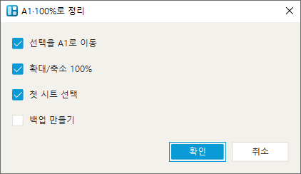
테마와 스타일 컨트롤
설정 → 모양에서 테마, 강조 색, 도구 모음, 드라이브 버튼, 상태 표시줄을 설정합니다. 테마는 Windows 설정 따르기, 라이트, 다크 중에서 고릅니다. 강조 색은 라이트와 다크에 따로 저장되며, 둘 다 기본값은 세룰리언 #0A9BD6입니다. 견본 여섯 가지와 직접 지정…에서 고를 수 있습니다. 더 이상 쓰지 않는 민트 강조 색 #2EC4A6이 남아 있는 예전 설정 파일은 다음에 읽을 때 세룰리언으로 바뀝니다. 민트는 이제 고를 수 없습니다.
테마를 바꾸면 창의 나머지 부분은 바로 바뀝니다. 열린 패널의 폴더 목록이 DirectUI 보기(보통의 탐색기 목록)이면 Maguro가 스스로 다시 시작해서 그 목록을 새 테마로 만듭니다. 경로, 필터, 배치는 세션에서 돌아오고, 그 목록의 뒤로·앞으로 기록은 처음부터 시작합니다. 클래식 목록 보기는 그 자리에서 색만 바뀌고 경로, 선택, 스크롤은 유지됩니다.
설정과 일괄 이름 바꾸기의 드롭다운은 모두 스타일을 입힌 콤보 상자입니다. 기본 콤보 상자를 그대로 쓰므로 F4, Alt+Down, 글자를 입력해 고르기, 마우스 휠이 전과 똑같이 동작합니다. 닫힌 모양은 옆의 텍스트 칸에 맞춰 카드 배경, 가는 테두리, 살짝 둥근 모서리, 채워진 삼각형으로 그립니다. 라이트 테마에서 사용 가능한 화살표는 #444444라서 흰 바탕에서도 잘 보입니다. 다크 테마의 화살표는 테마 글자색을 씁니다. 포커스가 있거나, 마우스를 올리거나, 목록을 열면 테두리가 세룰리언으로 바뀝니다. 목록에서 선택한 줄은 세룰리언 바탕에 흰 글자입니다. 사용할 수 없는 콤보 상자와 꺼 둔 이름 바꾸기 규칙은 흐린 글자색으로 표시됩니다.
이 도움말 사이트는 앱 테마와 관계없이 라이트 테마로만 표시됩니다.
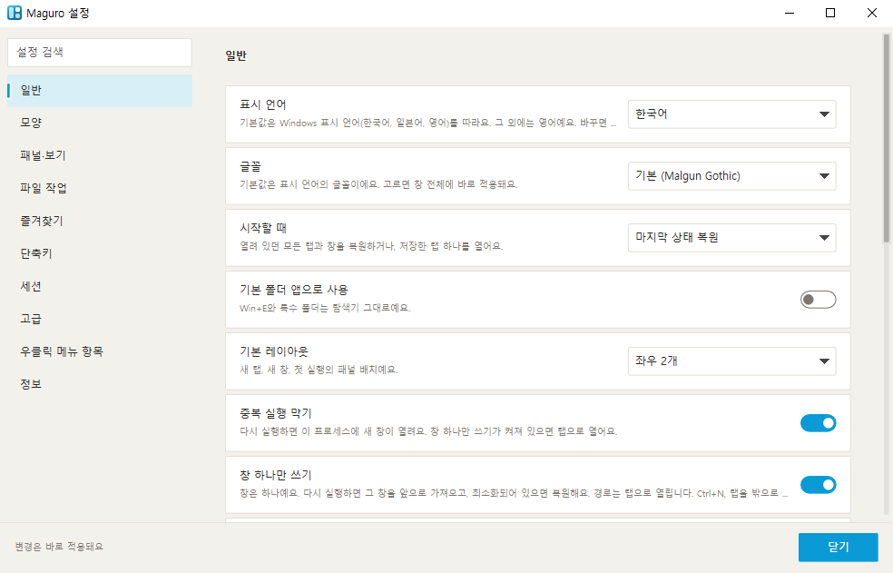
설정
Ctrl+,로 설정을 엽니다. 검색 상자에 입력하면 제목이나 설명이 일치하는 페이지, 카드, 단축키로 이동합니다. 변경 사항은 바로 적용됩니다. 설정 파일은 %APPDATA%\Maguro\maguro.json이고, exe 옆에 portable.txt가 있으면 exe 옆의 maguro.json을 씁니다. 파일이 없으면 기본값으로 시작합니다. 저장에 실패하면 5초 뒤에 다시 시도합니다. 읽을 수 없는 파일은 건드리지 않고, 알 수 없는 키는 그대로 보존합니다. 각 키에 대한 설명은 docs/settings.md에 있습니다.
일반. 표시 언어(자동이면 맞는 언어 파일이 있을 때 Windows를 따르고, 없으면 영어). 글꼴은 창 전체에 적용되며, 글꼴 크기 설정은 없습니다. 시작할 때는 마지막 상태 복원, 저장한 세션 하나 열기, 기본 레이아웃 중에서 고릅니다. 기본 폴더 앱으로 사용은 파일 시스템 폴더와 드라이브에만 Maguro를 등록합니다. Win+E, 작업 표시줄, shell: 같은 가상 폴더는 계속 탐색기로 열립니다. 그 밖에 기본 레이아웃, 중복 실행 막기, 창 하나만 쓰기, 열기/저장 대화 상자의 폴더, 클립보드 경로 단축키, 빈 곳 더블클릭으로 상위 폴더, Everything, WinMerge 경로가 있습니다.
모양. 테마, 강조 색, 도구 모음, 드라이브 버튼, 상태 표시줄.
패널·보기. 새 패널의 기본 보기. 폴더마다 보기 기억을 켜면 정렬, 열, 보기 방식, 아이콘 크기, 그룹을 설정 파일 옆의 folder-views.json에 저장합니다. 모든 폴더의 기본 보기는 활성 패널에서 가져오며, 이 폴더의 보기 지우기와 모두 지우기도 있습니다. 새 패널의 시작 폴더는 내 PC, 바탕 화면, 지정한 폴더 중에서 고릅니다. 숨김 파일. 파일 확장명은 Windows 자체 설정이라 탐색기에도 똑같이 적용됩니다. 폴더 크기와, 기본으로 꺼져 있는 네트워크 폴더 크기 옵션. 왼쪽 패널, 즐겨찾기와 트리 중 어느 쪽을 위에 둘지, 즐겨찾기 패널 표시와 트리뷰 패널 표시. 활성 패널 테두리 강조. 미리보기 창. 스페이스로 미리보기. 휠로 다음/이전 파일로 넘기기.
파일 작업. 일반적인 붙여넣기에는 항상 Windows 복사 창을 씁니다. 네트워크 폴더 고속 복사. 삭제할 때 확인. 기본 삭제 방식. 새 파일 이름. 끌어 놓기 기본 동작은 Windows 규칙, 항상 복사, 항상 묻기 중에서 고릅니다.
즐겨찾기. 그룹, 폴더, 파일을 트리로 관리합니다.
단축키. 행을 두 번 클릭하거나 변경을 누른 뒤 새 단축키를 누릅니다. Esc를 누르면 취소합니다. 다른 동작과 겹치면 서로 맞바꿀 수 있습니다. 되돌리기를 누르면 그 행이 기본값으로 돌아갑니다. 바꾼 단축키는 다시 시작하지 않아도 바로 다음 입력부터 적용됩니다. 기본값과 다른 단축키만 저장됩니다.
세션. 세션 폴더, 종료할 때 자동 저장(기본값은 꺼짐), 저장 안 된 변경 표시 (초록 점, 기본값은 켜짐).
고급. 시작할 때 GitHub에서 새 릴리스를 확인합니다. 업데이트할 때는 maguro.exe와 maguro.exe.sha256만 내려받으며, zip만 있는 릴리스는 풀지 않습니다. 설정 파일 위치와 Maguro JSON·Maguro ini 형식의 내보내기·가져오기도 여기에 있습니다. 모든 설정 초기화는 환경설정만 기본값으로 되돌리고, 레이아웃, 폴더, 즐겨찾기는 남깁니다. 차단할 셸 확장 DLL 이름도 여기서 지정합니다.
우클릭 메뉴 항목. 타사 처리기, 메뉴 모양, 패키지 명령, WinMerge. 자세한 내용은 우클릭 메뉴를 참고하세요.
정보. 버전과 출처를 보여 줍니다. Maguro는 efww가 만든 efww/grids의 포크입니다.
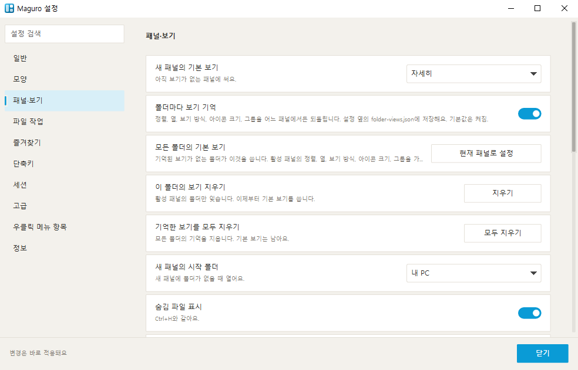
Win+Shift+E와 그 밖의 동작
단축키는 단축키 항목에 모아 두었습니다.
Win+Shift+E는 단축키 설정이 켜져 있으면(기본값) Maguro가 실행 중인 동안 어디서나 동작합니다. Maguro를 앞으로 가져오고 파일 목록에 포커스를 둡니다. Maguro 대화 상자 때문에 그 소유 창이 비활성화되어 있으면 대화 상자를 대신 앞으로 가져옵니다. Maguro가 이미 앞에 있을 때 다시 누르면, 창 하나만 쓰기가 켜져 있으면 새 탭을 열고 꺼져 있으면 Maguro를 최소화합니다. 이 단축키는 ‘기본 폴더 앱으로 사용’과 관계가 없고, Ctrl+Shift+E와도 다릅니다. Ctrl+Shift+E는 Maguro에 포커스가 있을 때 왼쪽 패널을 보이거나 숨기기만 합니다. Win+E는 계속 탐색기를 엽니다.
Ctrl+Alt+G는 다른 앱의 열기·저장 대화 상자를 Maguro에서 연 폴더로 이동시킵니다. 이 키 조합은 그런 대화 상자(#32770)가 앞에 있고 설정이 켜져 있을 때만 등록됩니다. 누르면 Maguro에 열린 폴더 목록이 나오고, 고른 폴더로 대화 상자가 이동합니다. 가상 폴더는 목록에서 빠집니다. Win+Shift+E의 동작은 바뀌지 않습니다.
F6과 Shift+F6은 포커스를 옮깁니다. Ctrl+H는 숨김 파일 표시를 켜고 끕니다. Num+나 Ctrl+Shift+A는 패턴으로 선택, Num−는 패턴으로 선택 해제, Num*는 선택 반전입니다. Backspace 또는 Alt+Left는 뒤로, Alt+Right는 앞으로, Alt+Up은 상위 폴더로 이동합니다. Alt+Down은 최근 폴더를 엽니다. Ctrl+Alt+R은 최근 파일을 최신순으로 엽니다. Ctrl+Enter는 선택한 최근 파일을 해당 폴더에서 보여 주는데, 최근 파일 패널에서만 동작하고 다른 곳에서는 키 입력을 그대로 넘깁니다.
단축키
아래는 기본 단축키이며, 모두 설정 → 단축키에서 바꿀 수 있습니다. 앱 안의 단축키 목록(Ctrl+/)에는 바꾼 내용이 다시 시작하지 않아도 바로 반영됩니다. 이 페이지에는 0.2.6에 포함된 기본값을 적었습니다.
Win+Shift+E와 Win+Alt+V는 Maguro가 실행되는 동안 계속 등록되어 있습니다. Ctrl+Alt+G는 다른 앱의 열기·저장 대화 상자가 앞에 있을 때만 등록됩니다. 작업 공간 단축키는 전역 단축키가 아니고, 패널 탭 단축키는 포커스가 패널에 있을 때만 동작합니다.
| 키 | 동작 |
|---|---|
| 탭 | |
| Ctrl+T | 새 탭 |
| Ctrl+W | 탭 닫기 |
| Ctrl+Tab | 다음 탭 |
| Ctrl+Shift+Tab | 이전 탭 |
| Ctrl+Shift+T | 닫은 탭 다시 열기 |
| Ctrl+Alt+K | 탭 복제 |
| Ctrl+Shift+L | 탭 목록 |
| 패널 | |
| Ctrl+Page Down | 다음 패널 |
| Ctrl+Page Up | 이전 패널 |
| Ctrl+1…9 | 1–9번 패널로 이동 |
| 패널 탭 | |
| Ctrl+Alt+T | 새 패널 탭 |
| Ctrl+Alt+W | 패널 탭 닫기 |
| Ctrl+Alt+Page Down | 다음 패널 탭 |
| Ctrl+Alt+Page Up | 이전 패널 탭 |
| 이동 | |
| Alt+Shift+← | 왼쪽 패널 |
| Alt+Shift+→ | 오른쪽 패널 |
| Alt+Shift+↑ | 위 패널 |
| Alt+Shift+↓ | 아래 패널 |
| Ctrl+Alt+Shift+← | 왼쪽 패널과 자리 바꾸기 |
| Ctrl+Alt+Shift+→ | 오른쪽 패널과 자리 바꾸기 |
| Ctrl+Alt+Shift+↑ | 위 패널과 자리 바꾸기 |
| Ctrl+Alt+Shift+↓ | 아래 패널과 자리 바꾸기 |
| Alt+← / Backspace | 뒤로 |
| Alt+→ | 앞으로 |
| Alt+↑ | 상위 폴더 |
| Alt+↓ | 최근 폴더 |
| Ctrl+L / Alt+D / F4 | 주소창 |
| 보기 | |
| Ctrl+F | 이 폴더 검색 |
| F3 | 빠른 미리보기 |
| Alt+P | 미리보기 창 |
| F6 | 다음 포커스 |
| Shift+F6 | 이전 포커스 |
| Ctrl+H | 숨김 파일 표시 |
| Ctrl+Shift+E | 왼쪽 패널 표시 |
| Ctrl+Shift+O | 탐색기 폴더 가져오기 |
| Ctrl+Alt+R | 최근 파일 |
| Ctrl+Shift+M | 패널 크게 보기 / 복원 |
| 파일 | |
| Ctrl+Shift+C | 전체 경로 복사 |
| Ctrl+Shift+R | 일괄 이름 바꾸기 |
| Num+ / Ctrl+Shift+A | 패턴으로 선택 |
| Num− | 패턴으로 선택 해제 |
| Num* | 선택 반전 |
| Ctrl+Alt+N | 새 텍스트 문서 |
| Ctrl+Shift+N | 새 폴더 |
| F7 | 이 패널에 새 폴더 |
| Ctrl+Alt+C | WinMerge로 폴더 비교 |
| Ctrl+Shift+B | 파일 바구니 |
| Ctrl+Alt+B | 선택을 바구니에 담기 |
| Ctrl+Enter | 폴더에서 표시 (최근 파일에서만) |
| 세션 | |
| Ctrl+S | 이 탭 저장 |
| 작업 공간 | |
| Ctrl+Alt+1…9 | 작업 공간 불러오기 |
| Ctrl+Alt+Shift+1…9 | 작업 공간 저장 |
| 즐겨찾기 | |
| Ctrl+B | 즐겨찾기 |
| 도움말 | |
| Ctrl+, | 설정 |
| F1 | 브라우저에서 이 도움말 열기 |
| Ctrl+/ | 단축키 목록 |
| 창 | |
| Win+Shift+E | Maguro를 앞으로 |
| Ctrl+Alt+G | 파일 대화 상자의 폴더로 이동 |
| Win+Alt+V | 클립보드 경로 열기 |
| Ctrl+N | 새 창 |
| Ctrl+Shift+W | 폴더 감시 |
Maguro가 바꾸지 않아 탐색기와 똑같이 쓰는 키는 F2(이름 바꾸기), Del과 Shift+Del, Ctrl+C, Ctrl+X, Ctrl+V, F5(새로고침)입니다.
마우스로는 레이아웃 버튼, 주소창의 꺾쇠(›), 구분선 두 번 클릭, 패널 머리줄 우클릭(색 지정), 패널 탭 가운데 클릭(닫기), 패널 번호 끌기(자리 바꾸기, Ctrl을 누르면 복제)를 쓸 수 있습니다.
언어
영어는 프로그램에 내장되어 있어 다른 번역이 없을 때 쓰입니다. 한국어, 일본어, 프랑스어, 독일어는 lang/lang.ko.ini, lang/lang.ja.ini, lang/lang.fr.ini, lang/lang.de.ini 파일로 함께 배포됩니다. Maguro는 처음 실행할 때와 버전이 바뀔 때마다 이 네 파일을 설정 파일 옆의 lang 폴더에 기록하며, 이 네 파일은 항상 덮어씁니다. lang.xx.user.ini나 직접 추가한 다른 lang.xx.ini는 기록하거나 덮어쓰거나 삭제하지 않습니다.
언어 파일은 UTF-8이며, 맨 앞의 BOM은 무시합니다. 각 줄은 key = text 형식입니다. [meta]의 name은 언어 목록에 표시되는 이름이고, [meta]의 font는 UI 글꼴로, 넣지 않아도 됩니다. 없는 키는 영어 텍스트로 표시됩니다. lang.xx.user.ini는 그 위에 덧씌워 불러오며 우선 적용됩니다.
자동으로 두면 맞는 언어 파일이 있을 때 Windows 표시 언어를 따르고, 없으면 영어를 씁니다. 각 패널 안의 탐색기 부분(열 이름, 셸 자체의 우클릭 항목 등)은 Windows 표시 언어를 따릅니다. 글꼴은 기본적으로 언어에 맞는 서체를 씁니다. 한국어는 Malgun Gothic, 일본어는 Yu Gothic UI, 그 밖의 언어는 Segoe UI이며, 언어 파일에 서체가 지정되어 있으면 그 서체를 씁니다. 고른 서체는 창 전체에 한 번에 적용됩니다.
문제 해결
폴더가 열리지 않으면 그 패널을 클릭하고 F5를 누르세요. F5는 활성 패널을 새로 읽고, 열지 못한 네트워크 폴더를 다시 시도합니다.
하위 폴더 검색 결과가 없으면 Everything을 설치해 실행한 뒤 설정 → 일반을 확인하세요. Everything이 없으면 Maguro가 디스크를 직접 훑는데, 이것도 하위 폴더를 켰을 때만 합니다.
네트워크 복사가 느리거나 기대한 Maguro 진행 창이 나오지 않으면 네트워크 폴더 고속 복사를 켜거나 고속 붙여넣기를 쓰세요. 이 설정이 꺼져 있으면 Windows 복사 창을 씁니다. 완전히 로컬인 복사에서는 고속 붙여넣기를 고르지 않는 한 고속 복사가 동작하지 않습니다.
WinMerge가 실행되지 않으면 설정 → 일반에서 경로를 지정하세요. 폴더를 비교하려면 실제 폴더가 열려 있어야 합니다. 우클릭 메뉴의 WinMerge 명령은 켜기 전까지 보이지 않습니다.
SFTP 연결에 실패하면, 설치 안내가 나올 때 rclone과 WinFsp를 설치하고 호스트, 포트, 사용자, 암호를 확인하세요. WebDAV는 HTTPS가 필요할 수 있습니다. SMB는 Windows 공유를 사용하고, FTP는 연결에 입력한 호스트와 포트를 사용합니다.
테마를 바꾼 뒤에도 폴더 목록이 이전 색이면 Maguro를 다시 시작하세요. DirectUI 목록은 그 재시작으로 다시 만들어집니다. 클래식 목록은 재시작 없이 색이 바뀝니다.
지난번에 Maguro가 예기치 않게 종료되었다면, 다음에 시작할 때 보고서가 저장된 위치(설정 파일 옆의 crashes 폴더)를 알려 주고 그 폴더를 열지 묻습니다. 보고서에는 버전, 스레드, 예외, 오류가 난 모듈, 마지막 폴더, 불러온 셸 확장 DLL이 기록됩니다.
다시 실행해도 아무 일도 일어나지 않는 것 같다면, 중복 실행 막기나 창 하나만 쓰기가 켜져 있어서 첫 창이 그대로 남고 경로는 탭으로 열린 것입니다. 설치할 수 있는 업데이트는 maguro.exe를 교체한 뒤 다시 시작합니다. zip만 있는 릴리스는 풀지 않으므로, 업데이트 창에서 안내하면 exe를 직접 교체하세요.
Maguro를 관리자 권한으로 실행하지 마세요. PowerToys Mouse Crosshairs 같은 도구는 권한이 상승된 창 위에서 커서를 따라가지 못합니다(UIPI). Maguro를 일반 권한으로 실행하거나, 두 프로그램을 모두 관리자 권한으로 실행하세요.
exe에 코드 서명이 없어서 처음 실행할 때 SmartScreen 경고가 나옵니다. 추가 정보 → 실행을 누르세요.
예전 .grids, .qdr, grids.ini 파일은 열리지 않습니다. 현재 창에서 .maguro 세션을 새로 저장하세요.